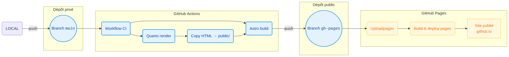

Portfolio de Data Science
automatisation, CI/CD, Astro, Quarto, GitHub Actions, publication web, pipeline de déploiement, data science
Le déploiement de ce site est automatisé par GitHub Actions via un pipeline d’intégration et déploiement continus (CI/CD), déclenché à chaque mise à jour de la branche main, assurant ainsi la mise en ligne immédiate des modifications. Son principal atout réside dans la génération automatique de rapports analytiques scientifiques, rédigés sous forme de fichiers Quarto (.qmd), qui combinent efficacement texte explicatif en Markdown, code exécutable (Python, R, etc.) et résultats interactifs (graphiques, cartes, tableaux). Ces rapports deviennent des pages autonomes explorables directement depuis l’interface Astro, qui sert de vitrine globale en proposant une page d’accueil dynamique, des descriptions détaillées de chaque projet et des liens vers les rapports complets. Ce processus entièrement automatisé garantit une mise à jour rapide, reproductible et fluide du contenu analytique du site web.
1 Étapes du déploiement
Déclenchement automatique
- Le processus démarre automatiquement dès qu’un commit est poussé sur la branche
maindu dépôt sur une machine virtuelle Ubuntu fournie par GitHub.
- Le processus démarre automatiquement dès qu’un commit est poussé sur la branche
on:
push:
branches: [main]
jobs:
build-and-deploy:
runs-on: ubuntu-latestPréparation de l’environnement
La machine virtuelle GitHub est configurée avec :
- Node.js (pour Astro)
- Quarto (pour générer les rapports à partir des fichiers
.qmd) - Python et Jupyter (pour exécuter les blocs de code dans les rapports Quarto)
- name: Setup Node.js
uses: actions/setup-node@v3
- name: Install Quarto
uses: quarto-dev/quarto-actions/setup@v2
- name: Setup Python & Jupyter
run: |
sudo apt-get update # Met à jour la liste des paquets
sudo apt-get install -y python3-pip # Installe pip pour Python 3
python3 -m pip install --upgrade pip # Met à jour pip lui-même
pip install notebook ipykernel pandas numpy matplotlib seaborn # Installe les packages Python nécessaires
python3 -m ipykernel install --user # Enregistre le noyau Python pour JupyterConstruction du site
- Les fichiers de rapports
.qmdsont convertis en fichiers.htmlstatiques viaquarto render. - Le site Astro est ensuite construit statiquement, générant tous les fichiers dans le dossier
dist/.
- Les fichiers de rapports
- name: Render Quarto reports
run: npm run build-qmd
- name: Build Astro
run: npm run astro:buildGestion des rapports HTML
- Astro écrasant le dossier
publiclors du build, les rapports générés (public/reports/*.html) sont manuellement recopiés dans le dossierdist/reportspour qu’ils soient inclus dans le site final.
- Astro écrasant le dossier
- name: Copy reports into dist
run: |
mkdir -p dist/reports
# Copie les .html, ne plante pas s'il n'y en a aucun
cp public/reports/*.html dist/reports/ 2>/dev/null || echo "Pas de rapports HTML à copier"
# Copie les dossiers d'assets (_files)
cp -r public/reports/*_files dist/reports/ 2>/dev/null || echo "Pas de dossiers *_files à copier"Génération automatique du sitemap
- Un sitemap personnalisé est généré pour inclure automatiquement toutes les pages HTML des rapports, garantissant leur indexation par les moteurs de recherche.
- name: Generate custom sitemap with reports
run: |
# Générer un sitemap personnalisé incluant les rapports
npm run generate-sitemapDéploiement sur GitHub Pages
- Le contenu du dossier
distest publié automatiquement sur la branchegh-pagesdu dépôtncsdecoopman.github.io. - Ce site est alors accessible publiquement à l’URL associée au dépôt GitHub Pages.
- La branche de déploiement (
gh-pagesici) sera recréée à chaque fois comme une branche “orpheline”, c’est-à-dire sans historique Git. Les anciennes modifications sont invisibles. Le site publié reflète uniquement l’état actuel du projet, sans résidu de versions précédentes.
- Le contenu du dossier
- name: Deploy to GitHub Pages
uses: peaceiris/actions-gh-pages@v3
with:
force_orphan: true Figure 1 : Pipeline du projet
{kind=link}
2 Intérêt de cette approche
- Automatisation totale : plus besoin de déployer manuellement, chaque mise à jour sur
mainse reflète automatiquement en ligne. - Fiabilité et cohérence : l’environnement est recréé à l’identique à chaque exécution, garantissant des builds reproductibles.
- Intégration de rapports scientifiques : les fichiers
.qmdsont convertis en.htmlà la volée, ce qui permet d’intégrer directement des analyses de données (Jupyter + Quarto) dans le site. - Séparation claire du contenu : le site Astro sert de vitrine, tandis que les rapports sont stockés de manière organisée et accessible dans
dist/reports/. - Référencement optimisé : génération automatique d’un sitemap incluant tous les rapports HTML, garantissant leur indexation par les moteurs de recherche.
Cette architecture de déploiement garantit une mise en ligne rapide, fiable et maintenable d’un site hybride mêlant contenu statique (Astro) et rapports dynamiques (Quarto).